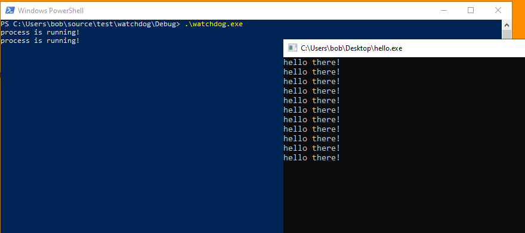

# Watchdog
A watchdog is a secondary process, or thread (, or mutex?) that watches your primary process and prevents tampering with it and restarts if it closes.
Watchdogs aren't particulary effective at protecting processes because who watches your watchdog? If you can terminate the watchdog, you can then terminate the process it's protecting.
It just keeps going 1 level deeper.
Examples
•
http://www.rohitab.com/discuss/topic/41154-process-persistence/#entry10096756## Simple Watchdog Demo
Here I have a watchdog that's checking for the
hello.exe process every 10 seconds.
hello.exe prints
hello there! in an infninite loop.
If
hello.exe doesn't exist, the watchdog will start it.
### Code
Here's my simple hello program.
#include <stdio.h>
#include <Windows.h>
int main(void)
{
while (TRUE)
{
printf("hello there! \n");
Sleep(2000);
}
return 0;
}
And here's my watchdog code.
This watchdog code is ideally injected into a critical system process - like
explorer.exe - to protect it and so that it's a pain to terminate.
#include <stdio.h>
#include <Windows.h>
#include <TlHelp32.h>
const wchar_t protected_process[] = L"hello.exe";
char protected_process_path[] = "C:\\Users\\Bob\\Desktop\\hello.exe";
/*
Takes a snapshot of the processes on the system every 10 seconds and checks for the protected process.
If the protected process isn't running, the watchdog will start it.
*/
void watchdog(void)
{
BOOL process_running = FALSE;
HANDLE h_snapshot = NULL;
PROCESSENTRY32 process = { 0 };
process.dwSize = sizeof(PROCESSENTRY32);
wchar_t process_name[] = { 0 };
// infinite loop. check processes every 10 seconds.
while (TRUE)
{
process_running = FALSE;
STARTUPINFOA si = { 0 };
PROCESS_INFORMATION pi = { 0 };
// get snapshot of processes & grab first process
h_snapshot = CreateToolhelp32Snapshot(TH32CS_SNAPPROCESS, 0);
Process32First(h_snapshot, &process);
// loop through processes, looking for protected process
do
{
if (wcscmp(process.szExeFile, protected_process) == 0)
process_running = TRUE;
} while (Process32Next(h_snapshot, &process));
if (process_running == TRUE)
{
printf("process is running! \n");
}
else if (process_running == FALSE)
{
printf("\t process not running... spawning it \n");
CreateProcessA(NULL, protected_process_path, NULL, NULL, FALSE, CREATE_NEW_CONSOLE, NULL, NULL, &si, &pi);
//ShellExecuteA(NULL, "open", protected_process_path, NULL, NULL, SW_SHOW);
printf("\t started process! \n");
}
Sleep(10000);
}
return;
}
int main(void)
{
watchdog();
return 0;
}